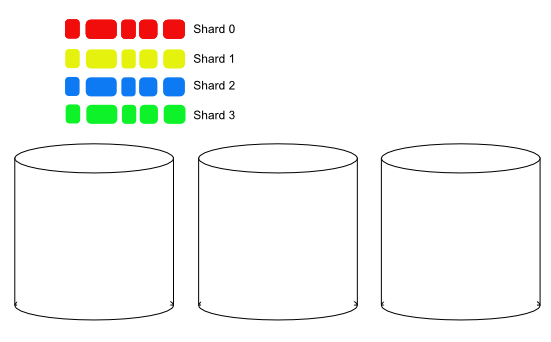
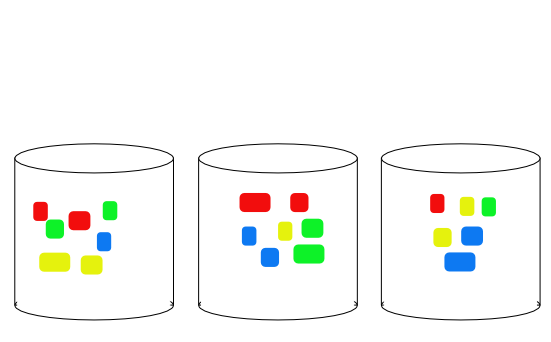
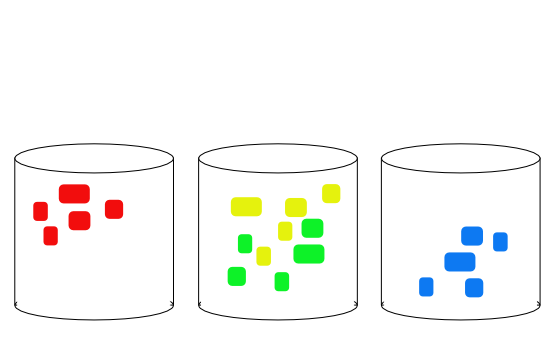
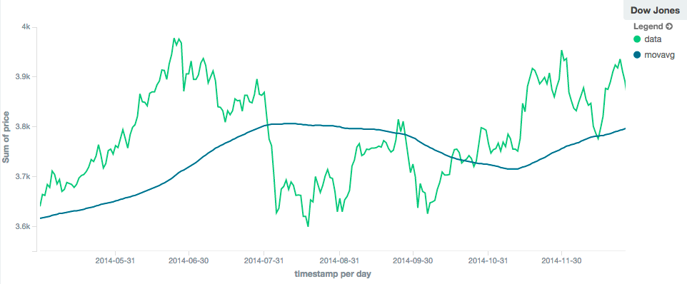

What's new in Elasticsearch 2.0
About Me
- Software Developer at Elastic
- Joined: Oct 2012
- Elasticsearch contributor since Apr 2011
About Elastic
- Founded: July 2012
- Renamed Elasticsearch → Elastic: Mar 2015
- Headquaters: Amsterdam and Mountain View, CA
- Develops Elasticsearch, Logstash, Kibana, Beats
- Provides:
- Training (public and onsite)
- Development and production support
- Hosted Elasticsearch (Found)
- Commercial plugins: Marvel, Shield, Watcher
About Elasticsearch
About Elasticsearch
- Realtime search and analytics engine
- JSON-oriented, Apache Lucene-based
- Automatic Schema Detection
- With full control of schema when needed
- Distributed
- Scales Up+Out, Highly Available
- Multi-tenancy
- Dynamically create/delete indices
- API centric
- Most functionalty is exposed throught an API
Elasticsearch 2.0
Very large release
>2,500 Pull Requests
469 commiters
Focus on growing up
Focus on growing up
- Simplification
- Security
- Resiliency
- Features
- Plugins
Simplification
sometimes includes removing stuff
What’s NOT in Elasticsearch 2.0
- Rivers - use logstash or invest into your own ingestion layer
- Facets - replaced by aggregations
- _shutdown API - use platform specific services
- Support for Thrift and Memcached protocols
- Bulk UDP - use the standard bulk API, or use UDP to send documents to Logstash first.
What’s NOT in Core
(Moved to a plugin)
- Delete by query
- Types:
- murmur3
- size
- Multicast discovery
Simplification: Mapping changes
Simplification: Mapping changes
- Conflicting field mappings
- Fields cannot be referenced by short name
- Type name prefix removed
- Field names cannot contain dots
- Type names cannot start with a dot
- Type may no longer be deleted
index_analyzeris removed_analyzerfield is removed- date format changes
- ... and more ...
Conflicting field mapping
PUT my_index
{
"mappings": {
"type_one": {
"properties": {
"name": { "type": "string" } ❶
}
},
"type_two": {
"properties": {
"name": { "type": "string", "analyzer": "english" } ❷
}
}
}
}Ambiguous field lookup before 2.0
PUT my_index
{
"mappings": {
"name": { ❶
"properties": {
"title": { "type": "string" }, ❷
"name": { ❸
"properties": {
"title": { "type": "string" } ❹
}
}
}
}
}
}What does title refer to?
What about name.title?
What about name.name.title?
Field lookup in 2.0
PUT my_index
{
"mappings": {
"name": { ❶
"properties": {
"title": { "type": "string" }, ❷
"name": { ❸
"properties": {
"title": { "type": "string" } ❹
}
}
}
}
}
}"title" always refers to ❷
"name.title" always refers to ❹
"name.name.title" is invalid
Field analyzer
PUT my_index
{
"mappings": {
"my_type": {
"properties": {
"title": { "type": "string", "analyzer": "my_analyzer }
}
}
}
}Field analyzer
Before 2.0:
analyzer- sets index and search analyzerssearch_analyzer- sets search analyzerindex_analyzer- sets index analyzer
Starting with 2.0:
analyzer- sets index and search analyzerssearch_analyzer- overrides search analyzer
Other Mapping Changes
Check The Great Mapping Refactoring blog post
Simplification: Query and Filter Execution Changes
Before 2.0
- Queries:
-
- Typically contribute to scoring
- No caching
- Filters:
-
- Don't contribute to scoring
- Can be cached
Starting with 2.0
- Filters and queries are merged into queries
- The behavior of a query clause depends on whether it is used in query context or in filter context
Before 2.0
{
"filtered" : {
"query": { query definition },
"filter": { filter definition }
}
}Starting with 2.0
{
"bool" : {
"must": { query definition },
"filter": { filter definition }
}
}Two-phase execution
- Approximation phase
- quickly iterates over a superset of the matching documents
- Verification phase
- check if a document in this superset actually matches the query
Two-phase execution - how is this useful?
{
"bool" : {
"must": [{
"match_phrase": {
"body": "quick fox" ❶
}, {
"match_phrase": {
"body": "brown dog" ❷
}
}]
}
}Instead of loading posting list for all documents that contain quick and fox or brown and dog, we only load postings for the documents that contain all 4 terms.
Query Caching
- Fully automatic
- Keeps track of 256 most recently used queries
- Only caches those that appear 5 times or more
- Does not cache segments which have less than 10000 documents or 3% of the documents of the index
- More efficient query cache (roaring bitmaps)
- Non-scoring components are cache-able
Security
Networking changes
Elasticsearch now binds to local interfaces
Unicast discovery is now default
Makes elasticsearch more secure by default
Running under security manager by default
- Prevents outside access outside of elasticsearch even if elasticsearch process is compromised
- All resources that elasticsearch can access are defined on node startup
- Some libs/plugins are unsecured!
Reliability
Index operations are now durable by default
- Before 2.0 transaction log was fsynced every 5 sec
- Transaction log is now fsync after each operation
- Configurable
- On SSDs have indexing is about 7% - 10% slower with bulk indexing compared to async translog flushes
Multiple data path striping
- Before all shards were stripped across all paths
- This striping is no longer supported. Instead, different shards may be allocated to different paths, but all of the files in a single shard will be written to the same path.
Multiple data path striping
Before 2.0
After 2.0
Cluster State Diffs
- Before entire cluster state was shipped on every change to every node
- Starting with 2.0 only changes are sent
Units are required in all settings
curl -XPUT "localhost:9200/test/_settings" -d '{
"index" : {
"refresh_interval" : "5"
}
}'What have I just done here?
Doc values by default
- Dramatic memory-reduction by default
- Any field that is indexed but not analyzed now has doc values.
- Only for indices created with 2.0
Some cool recent reliability changes that you might have missed
- Sync-flush with
sync_id(1.6) - Async shard allocation (1.6) was blocking cluster state
- Better handling of node leave/rejoin (1.7) wait for one minute
Features
Pipeline aggs
- Derivatives
- Moving average
- Holt Winters (prediction / anomaly detection)
- Stats: Min/Max/avg
- Time-series math
Moving average - 10

Moving average - 100
Holt Winters - seasonal fluctuations

Index compression
- 10-30% reduction in index size
- Some indexing/merging impact
- Dynamic setting - could be set before optimization for time-based indices
Plugins
$ mvn clean install[INFO] Plugin: Analysis: ICU .............................. SUCCESS
[INFO] Plugin: Analysis: Japanese (kuromoji) .............. SUCCESS
[INFO] Plugin: Analysis: Phonetic ......................... SUCCESS
[INFO] Plugin: Analysis: Smart Chinese (smartcn) .......... SUCCESS
[INFO] Plugin: Analysis: Polish (stempel) ................. SUCCESS
[INFO] Plugin: Delete By Query ............................ SUCCESS
[INFO] Plugin: Discovery: Azure ........................... SUCCESS
[INFO] Plugin: Discovery: EC2 ............................. SUCCESS
[INFO] Plugin: Discovery: Google Compute Engine ........... SUCCESS
[INFO] Plugin: Discovery: Multicast ....................... SUCCESS
[INFO] Plugin: Language: Expression ....................... SUCCESS
[INFO] Plugin: Language: Groovy ........................... SUCCESS
[INFO] Plugin: Language: JavaScript ....................... SUCCESS
[INFO] Plugin: Language: Python ........................... SUCCESS
[INFO] Plugin: Mapper: Murmur3 ............................ SUCCESS
[INFO] Plugin: Mapper: Size ............................... SUCCESS
[INFO] Plugin: Repository: Azure .......................... SUCCESS
[INFO] Plugin: Repository: S3 ............................. SUCCESS
[INFO] Plugin: Store: SMB ................................. SUCCESSBefore 2.0
$ bin/plugin install elasticsearch/cloud-aws/2.7.2
$ bin/plugin install cloud-aws --url http://p.to/cloud-aws-2.7.2.zip
$ bin/plugin install cloud-aws --url file:p/to/cloud-aws-2.7.2.zipStarting with 2.0
$ bin/plugin install cloud-aws
$ bin/plugin install http://p.to/cloud-aws-2.7.2.zip
$ bin/plugin install file:p/to/cloud-aws-2.7.2.zipMigration Process
2.0 is a major release
- No rolling upgrades
- One way - no way to downgrade back to 1.x
- Make sure you have a backup
- Test it! Don't try to "wing it" in production.
Migration plugin
- Site plugin for 1.x that checks for potential issues
- https://github.com/elastic/elasticsearch-migration
Getting help
- https://discuss.elastic.co/ - Discussion Forums
- https://github.com/elastic/elasticsearch - Report issues
- IRC on Freenode - #elasticsearch
- http://stackoverflow.com/questions/tagged/elasticsearch
elastic{ON} TOUR
- Amsterdam - Oct 29
- London - Nov 3
- Paris - Nov 5
- München - Nov 10
- New York - Nov 17
- Chicago - Nov 19
- Los Angeles - Dec 1
- Seattle - Dec 3
- Sydney - Dec 8
- Melbourne - Dec 10
- Tokyo - Dec 16
elastic{ON} '16
- Feb 17-19, 2016
- Pier 48, San Francisco, CA
- Last year, Elastic{ON} sold out in just one week.
- https://www.elastic.co/elasticon
THE END
- Slides: https://imotov.github.io/presentations
- Twitter: @imotov